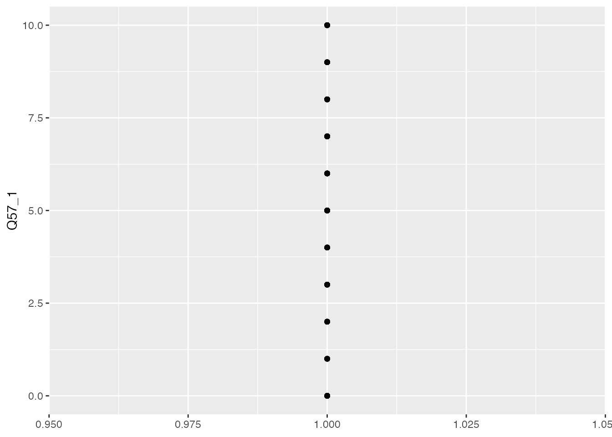
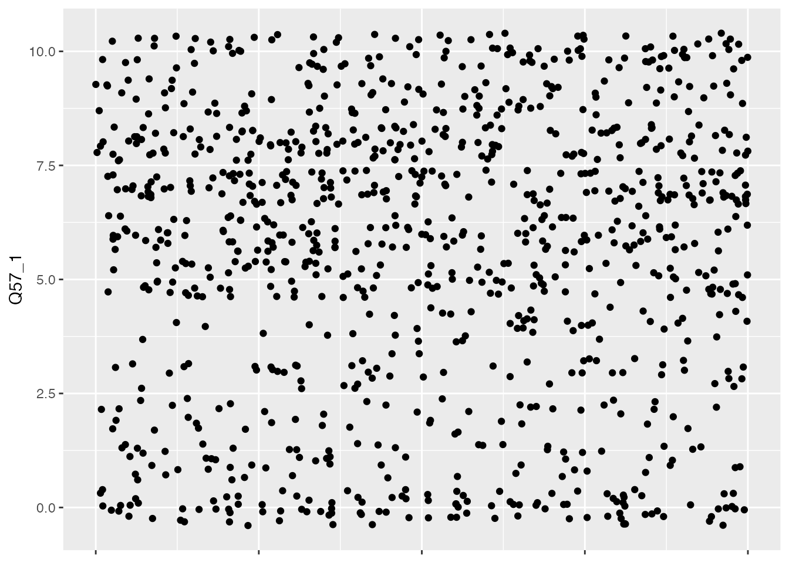
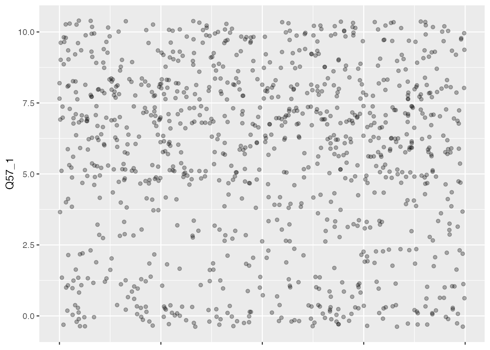

In this chapter, we’ll explore the diverse variety of ways you can frame collecting data around religion. Before we dive into that all, however, you might be wondering, why does it all really matter? Can’t we just use the census data and assume that’s a reasonably accurate approximation? I’ll explore the importance of getting the framing right, or better yet, working with data that seeks to unpack religious belonging, identity, and beliefs (or unbelief) in a variety of ways, but an example might serve to explain why this is important.
The 2016 presidential election result in the USA came as a surprise to many data analysts and pollsters. As the dust settled, a number of analysis scrambled to make sense of things and identify some hidden factor that might have tipped the balance away from the expected winner Hilary Clinton. One of the most widely circulated data points was the role of white evangelical Christians in supporting Trump. Exit polls reported that 81% of this constituency voted for Trump and many major media outlets reported this figure prominently, with public commentary from many religious leaders on the meaning this figure had the social direction of evangelical Christianity.
Far too few observers paused to ask what those exit polls were measuring and a closer look at that information reveals some interesting nuances. There is only a single firm that runs exit polling in the USA, Edison Research, who is contracted to do this work by a consortium of major media news outlets (“the National Election Pool”), which represents ABC News, Associated Press, CBS News, CNN, Fox News, and NBC News. It’s not a process driven by slow, nuanced, scholarly researchers strapped for funding, it’s a rapid high-stakes data collection exercise meant to provide data which can feed into the election week news cycle. The poll doesn’t ask respondents simply if they are “evangelical” it uses a broader proxy question to do this: “Would you describe yourself as a born-again or evangelical Christian?” This term “born-again” can be a useful proxy, but it can also prove misleading. When asked if they are “born again” people who identify with a number of non-Christian religions, and people who might describe themselves as non-religious will also often answer “yes”. This is particularly salient given the 2016 exit survey asked this question before asking specifically what a person’s religion was, so as Pew Research reported, “everyone who takes the exit poll (including religious “nones” and adherents of non-Christian faiths) has the opportunity to identify as a born-again or evangelical Christian.”
While the “born-again” Christian category tends to correlate to high levels of attendance at worship services, in this case some researchers found that white protestant Christian voters for Trump tended to have low levels of participation in activities. We don’t have access to the underlying data, and ultimately the exit polling was quite limited in scope (in some instances respondents weren’t even asked about religion), so we’ll never really have a proper understanding of what happened demographically in that election. But it’s an interesting puzzle to consider how different ways to record participation in religion might fit together, or even be in tension with one another. For this chapter, we’re going to take a look at another dataset which gives us exactly this kind of opportunity, to see how different kinds of measurement might reinforce or relate with one another.
3 Survey Data: Spotlight Project
In the last chapter we explored some high level data about religion in the UK. This was a census sample, which usually refers to an attempt to get as comprehensive a sample as possible. But this is actually fairly unusual in practice. Depending on how complex a subject is and how representative we want our data to be, it’s much more common to use selective sampling, that is survey responses at n=100 or n=1000 at a maximum. The advantage of a census sample is that you can explore how a wide range of other factors - particularly demographics - intersect with your question. And this can be really valuable in the study of religion, particularly as you will see as we go along that responses to some questions are more strongly correlated to things like economic status or educational attainment than they are to religious affiliation. It can be hard to tell if this is the case unless you have enough of a sample to break down into a number of different kinds of subsets. But census samples are complex and expensive to gather, so they’re quite rare in practice.
For this chapter, I’m going to walk you through a data set that a colleague (Charles Ogunbode) and I collected in 2021. Another problem with smaller, more selective samples is that researchers can often undersample minoritised ethnic groups. This is particularly the case with climate change research. Until the time we conducted this research, there had not been a single study investigating the specific experiences of people of colour in relation to climate change in the UK. Past researchers had been content to work with large samples, and assumed that if they had done 1000 surveys and 50 of these were completed by people of colour, they could “tick” the box. But 5% is actually well below levels of representation in the UK generally, and even more sharply the case for specific communities and regions in the UK. And if we bear in mind that non-white respondents are (of course!) a highly heterogenous group, we’re even more behind in terms of collecting data that can improve our knowledge. Up until recently researchers just haven’t been paying close enough attention to catch the significant neglect of the empirical field that this represents.
While I’ve framed my comments above in terms of climate change research, it is also the case that, especially in diverse societies like the USA, Canada, the UK etc., paying attention to non-majority groups and people and communities of colour automatically draws in a strongly religious sample. This is highlighted in one recent study done in the UK, the “Black British Voices Report” in which the researchers observed that “84% of respondents described themselves as religious and/or spiritual”. My comments above in terms of controlling for other factors remains important here - these same researchers also note that “despire their significant important to the lives of Black Britons, only 7% of survey respondents reported that their religion was more defining of their identity than their race”.
We’ve decided to open up access to our data and I’m highlighting it in this book because it’s a unique opportunitiy to explore a dataset that emphasises diversity from the start, and by extension, provides some really interesting ways to use data science techniques to explore religion in the UK.
4 Loading in some data
The first thing to note here is that we’ve drawn in a different type of data file, this time from an .sav file, which is usually produced by the statistics software package SPSS. This uses a different R Library (I use haven for this, which is now included as part of the tidyverse). The upside is that in some cases where you have survey data which includes a code like “very much agree” which corresponds to a value like “1” this package will preserve both the value and the text in the R dataframe that is created. This can be useful as there will be cases where, for the sake of analysis, you want the numeric values, and in other cases, for the sake of visualisation, you want the tidy names. It’s a sort of “have your cake and eat it too” situation!
Here’s how you can load in the sample data I’ve provided for this chapter:
# R Setup -----------------------------------------------------------------setwd("/Users/kidwellj/gits/hacking_religion_textbook/hacking_religion")library(here) |>suppressPackageStartupMessages()library(tidyverse) |>suppressPackageStartupMessages()library(haven)here::i_am("chapter_2.qmd")
here() starts at /Users/kidwellj/gits/hacking_religion_textbook/hacking_religion
Now that you’ve loaded in data, you have a new R dataframe called “climate_experience_data” with a lot of columns with just under 1000 survey responses.
5 How can you ask about religion?
One of the challenges we faced when running this study is how to gather responsible data from surveys regarding religious identity. As we already hinted in the last chapter, this is one of the key problems we explore in this chapter. We’ll dive into this in depth as we do analysis and look at some of the agreements and conflicts in terms of respondent attribution. Just to set the stage, for the project spotlight dataset we used the following kinds of question to ask about religion and spirituality:
5.1 “What is your religion?”
The first, and perhaps most obvious question (Question 56 in the dataset) asks respondents simply, “What is your religion?” and then provides a range of possible answers. We included follow-up questions regarding denomination for respondents who indicated they were “Christian” or “Muslim”. For respondents who ticked “Christian” we asked, “What is your denomination?” and for respondents who ticked “Muslim” we asked “Which of the following would you identify with?” and then left a range of possible options which could be ticked such as “Sunni,” “Shia,” “Sufi” etc.
This is one way of measuring religion, that is, to ask a person if they consider themselves formally affiliated with a particular group. This kind of question has some limitations, but we’ll get to that in a moment.
5.2 “How religious would you say you are?”
We also asked respondents (Q57): “Regardless of whether you belong to a particular religion, how religious would you say you are?” and then provided a sliding scale from 0 (not religious at all) to 10 (very religious). Seen in this way, we had a tradition-neutral measurement of religious intensity.
5.3 Social and personal participation in activity
We included another classic indicator asking how often respondents go to worship (Q58): “Apart from weddings, funerals and other special occasions, how often do you attend religious services?”. The individual counterpart to this question about social participation came next in the form of (Q59): “Apart from when you are at religious services, how often do you pray?” As with the previous question, the answers here also came in an descending scale of intensity:
More than once a week (1)
Once a week (2)
At least once a month (3)
Only on special holy days (4)
Never (5)
Do note the descending order here, which is different from the ascending scale for most other questions. This becomes relevant later when we explore correlations across questions. As we’ll note later on, each of these measures a particular kind of dimension, and it is interesting to note that sometimes there are stronger correlations between how often a person attends worship services (weekly versus once a year) and a particular view (in the case of our survey on environmental issues), than there is between their affiliation (if they are Christian or Pagan). We’ll do some exploratory work shortly to see how this is the case in our sample.
5.4 Spirituality
We also included a series of questions about spirituality in Q52 and used a slightly overlapping nature relatedness scale Q51 which we’ll unpack a bit further below. There are many other types of question you can ask. In fact, in my teaching, one of my favourite exercises is to ask a student group to brainstorm as many ways as possible to ask a person about their religion whilst using a different word for religion in each question. We’ve managed to come up with dozens, possibly hundreds over the year, exploring faith, ritual, spirituality, transcendence, connection, belief, unbelief, sacredness and more. The key thing is that these questions are not directly interchangeable, but they will almost inevitably overlap. If you want to make constructive claims about how religion relates to some aspect of daily life, you will need to carefully consider how you can relate to this plurality in framing everyday experience. In the best case scenario, I think, you should find ways to capture a variety of dimensions and then test for correlations and clusters among your data. We’ll do some exploration further below so you can see a bit of what I mean.
You’ll find that many surveys will only use one of these forms of question and ignore the rest. I think this is a really bad idea as religious belonging, identity, and spirituality are far too complex to work off a single form of response. We can also test out how these different attributions relate to other demographic features, like interest in politics, economic attainment, etc. so it’s equally important to test for non-religion factors that may have a stronger bearing on someone’s actions or sentiments.
So Who’s Religious?
As I’ve already hinted in the previous chapter, measuring religiosity is complicated. I suspect some readers may be wondering something like, “what’s the right question to ask?” here. Do we get the most accurate representation by asking people to self-report their religious affiliation? Or is it more accurate to ask individuals to report on how religious they are? Is it, perhaps, better to assume that the indirect query about practice, e.g. how frequently one attends services at a place of worship may be the most reliable proxy?
In the past scholars have worked with a minimalist definition of religion, e.g. measuring only those people who participate in worship services with a high level of frequency, or demonstrate a high level of commitment to a range of pre-determined doctrinal positions or beliefs. This relates to a suspicion which was popular in the 20th century, that with the advent of modernity, religion would naturally decline. This has not proven to be the case, with a range of resurgence and transformation of “old” religions and a similar multiplication of new religious and spiritual movements. Scholars tend to refer to this awareness as relating to a post-secular study of religion, and this kind of study tends to be more maximal in orientation, finding religion, belief, and spirituality in a variety of unexpected forms and places (like football, cooking, capitalism, and popular culture). Scholars here also emphasise the ways that religion can be hidden or “tacit,” and may also be non-exclusive, with individual persons adhering to a range of religious traditions in more creative forms of appropriation. We find Christian animists and spiritual atheists, and doctrinal positions which overlap and migrate. One place that scholars have found this to be widely the case is in contemporary belief in paranormal phenomena, which can transcend particular religious identities, and be quite widespread (over 80%) even in so-called advanced scientific societies.
6 Exploring data around religious affiliation:
Let’s dive into the data and do some initial exploration to map out what we have in this survey. We’ll start with the question 56 data, around religious affiliation. As usual, we’ll begin by loading in some data:
There are few things we need to do here to get the data into initial proper shape. This is often referred to as “cleaning” the data:
Because we imported this data from an SPSS .sav file format using the R haven() library, we need to start by adapting the data into a format that our visualation engine ggplot can handle (a dataframe).
Next we’ll rename the columns so these names are a bit more useful.
We need to omit non-responses so these don’t mess with the counting (these are NA in R)
As in the previous chapter, I’ve provided sample data here that needs a bit of work. This gives you a chance to see what this all looks like in practice, and offers some examples you can apply later to your own datasets.
If we pause at this point to view the data, you’ll see it’s basically just a long list of survey responses. What we need is a count of each unique response (these are sometimes called a factor). This will take a few more steps:
First we generate new a dataframe with sums per category and
2
…sort in descending order
3
Then we add new column with percentages based on the sums you’ve just generated
That should give us a tidy table of results, which you can see if you view the contents of our new religious_affiliation_sums dataframe:
head(religious_affiliation_sums)
# A tibble: 6 × 3
response n perc
<fct> <int> <chr>
1 Christian 342 "33.9%"
2 Muslim 271 "26.9%"
3 No religion 108 "10.7%"
4 Hindu 72 " 7.1%"
5 Atheist 54 " 5.4%"
6 Spiritual but not religious 38 " 3.8%"
We can view this as a bar chart using ggplot in ways that are similar to the exercises in the last chapter:
# make plotggplot(religious_affiliation_sums, aes(x = n, y = response)) +geom_col(colour ="white") +## add percentage labelsgeom_text(aes(label = perc),## make labels left-aligned and whitehjust =1, nudge_x =-.5, colour ="white", size=3)
You may notice that I’ve added one feature to our chart that wasn’t in the bar charts in chapter 1, text labels with the actual value on each bar using geom_text.
You may be thinking about the plots we’ve just finished in chapter 1 and wondering how they compare. Let’s use the same facet approach that we’ve just used to render this data in a subsetted way.
# First we need to add in data on ethnic self-identification from our respondents:df <-select(climate_experience_data, Q56, Q0)religious_affiliation_ethnicity <-as_tibble(as_factor(df))names(religious_affiliation_ethnicity) <-c("Religion", "Ethnicity")religious_affiliation_ethnicity_sums <- religious_affiliation_ethnicity %>%group_by(Ethnicity) %>% dplyr::count(Religion, sort =TRUE) %>% dplyr::mutate(Religion = forcats::fct_rev(forcats::fct_inorder(Religion)))religious_affiliation_ethnicity_plot <-ggplot(religious_affiliation_ethnicity_sums, aes(x = n, y = Religion)) +geom_col(colour ="white") +facet_wrap(~Ethnicity, scales ="free_x", labeller =label_wrap_gen(width =24)) +theme(strip.text.x =element_text(size =8)) +theme(strip.text.y =element_text(size =6))religious_affiliation_ethnicity_plot
You’ll notice that I’ve tweaked the display of facet titles a bit here so that the text wraps using labeller = label_wrap_gen(width = 24), since there are a lot of facets here, which are all interesting, I’ve also reduced the size of text for x- and y- axes using theme(strip.text.x = element_text().
7 Working With a Continum: Religiosity and Spirituality
So far we’ve just worked with bar plots, but there are a lot of other possible visualisations and types of data which demand them.
As I’ve mentioned above, on this survey we also asked respondents to tell us on by rating themselves on a scale of 0-10 with 0 being “not religious at all” and 10 being “very religious” in response to the question, “Regardless of whether you belong to a particular religion, how religious would you say you are?”
We’ll recycle some code from our previous import to bring in the Q57 data:
Note: we have removed sort = TRUE in the above statement as it will enforce sorting the data by quantities rather than the factor order. It wouldn’t really make sense to plot this chart in the order of response.
Now, let’s plot that data:
caption <-"Respondent Religiosity"ggplot(religiosity_sums, aes(x = response, y = n, color=response)) +1geom_col(colour ="white", aes(fill = response)) +## get rid of all elements except y axis labels + adjust plot margin2coord_flip() +theme(plot.margin =margin(rep(15, 4))) +labs(caption = caption)
1
We’ve added colors, because colours are fun.
2
Also new here is coord_flip to rotate the chart so we have bars going horizontally
7.1 Quick excursus: making things pretty with themes
Since we’re thinking about how things look just now, let’s play with themes for a minute. ggplot is a really powerful tool for visualising information, but it also has some quite nice features for making things look pretty.
If you’d like to take a proper deep dive on all this theme stuff, R-Charts has a great set of examples showing you how a number of different theme packages look in practice, “R-Charts on Themes”.
R has a number of built-in themes, but these are mostly driven by functional concerns, such as whether you might want to print your chart or have a less heavy look overall. So for example you might use theme_light() in the following way:
ggplot(religiosity_sums, aes(x = response, y = n, color=response)) +geom_col(colour ="white", aes(fill = response)) +## get rid of all elements except y axis labels + adjust plot margincoord_flip() +theme(plot.margin =margin(rep(15, 4))) +labs(caption = caption) +theme_light()
You can also use additional packages like ggthemes() or hrbrthemes() so for example we might want to try the pander theme which has it’s own special (and very cheerful) colour palette.
Or, you might try the well-crafted typgraphy from hbrthemes in the theme_ipsum_pub theme:
Note: this library will expect your system to have certain fonts installed and available for RStudio to use. You may want to run the following command to import your system fonts to R so they are available: extrafont::font_import(). This will take a bit of time to run. The package will also save fonts to a folder on your PC so you can install them if you don’t already have them, you can run import_public_sans() to get the path for these files and install in R.
We’re going to come back to this data around religiosity, but let’s set it to one side for a moment and build up a visualisation of an adjacent measure we used in this study which focussed on spirituality.
What is the difference between Spirituality and Religion?
Though the terms can tend to be used interchangeable in many cases, some scholars in religious studies and psychology have sought to develop the concept (and measurement of) spirituality as a counterpoint to religion. In some cases, scholars argue that religion is extrinsic (something outside us that we participate in) and spirituality is intrinsic (something inside ourselves that we engage with). Another way of contrasting the two concepts is to suggest that religion is social whereas spirituality is personal. As Hodge puts it, “spirituality refers to an individual’s relationship with God (or perceived Transcendence), while religion is defined as a particular set of beliefs, practices, and rituals that have been developed in community by people who share similar exis- tential experiences of transcendent reality.” Of course, as you’ll have noticed, there are many people who think of themselves as religious, but are opposed to participation in a formal religious tradition, or a social institution like a church, mosque, or denomination. So these differentiations can’t be sharply made in a conclusive way. And it’s likely that many respondents will have their own way to relate to these terms, whether it is affection or aversion.
For our study, we made use of a six-item intrinsic spirituality scale that was developed by David R. Hodge which is based on another instrument intended to measure “intrinsic religion” by Allport and Ross (1967). These researchers developed a series of questions which they asked respondents in a survey. The advantage here is that you’re getting at the question of spirituality from a lot of different angles and then you combine the scores from all the questions to get a mean “spirituality score”. There are many other ways that psychologists have developed to measure intrinsic religion or spirituality, and we’d encourage you to try them out (there are some references to get you started in Appendix B).
Statistics 101: Statistical Mean
Content TBD.
# Calculate overall mean spirituality score based on six questions:climate_experience_data$spirituality_score <-rowMeans(select(climate_experience_data, Q52a_1:Q52f_1))# Calculate overall mean nature relatedness score based on six questions:climate_experience_data$Q51_score <-rowMeans(select(climate_experience_data, Q51_heritage:Q51_remote_vacation))
Like we did in chapter 1, let’s start by exploring the data and get a bit of a sense of the character of the responses overall. One good place to start is to find out the mean response for our two continum questions. We can start with religiosity:
mean(climate_experience_data$Q57_1)
[1] 5.581349
Now let’s compare this with the overall mean score for our whole survey pool around spirituality:
mean(climate_experience_data$spirituality_score)
[1] 6.047454
So they’re pretty close, but there’s a bit of a contrast between the responses these two measures, with our cohort measuring a bit higher on spirituality than religiosity.
This is quite a blunt measure, telling us how the whole average of all the responses compares in each case. But what is the relationship between these two measures for each individual? To find out more about this, we need to explore the correlation between points. We’ll talk about correlation analysis in a little bit, but I think it can be helpful to get ourselves back to thinking about our data as consisting of hundreds of tiny points all of which relate to a specific person who provided a range of responses.
Now let’s try out some visualisations, staring with the religiosity data.
ggplot(climate_experience_data, aes(x =1, y = Q57_1)) +geom_point() +labs(x =NULL, y ="Q57_1")

This is pretty disappointing, as ggplot doesn’t know what to do with the x-axis as our points are 1-dimensional, e.g. they only have one value. But it’s easy to fix! You can ask R to add random numbers for the x-axis so that we can see more of the dots and they aren’t overlapping. This is called jitter:
ggplot(climate_experience_data, aes(x =1, y = Q57_1)) +geom_point(position =position_jitter(width =0.1)) +labs(x =NULL, y ="Q57_1") +theme(axis.text.x =element_blank())

You’ll also notice that we’ve hidden the x-axis value labels as these are just random numbers and not really something we want to draw attention to. We’ve also hidden the label for that axis.
This is visually pretty chaotic, but you can see probably see some places where the dots are thicker and get the sense that there are more in the top than the bottom.
Since this is quite a large plot, I’d recommend going one step further and making the dots a bit smaller, and a bit transparent (this is called “alpha” in R). The advantage of this is that we’ll be able to tell visually when dots are overlapping and register that there is a cluster. When they’re all the same black color, this is impossible to tell.
ggplot(climate_experience_data, aes(x =1, y = Q57_1)) +geom_point(position =position_jitter(width =1), color="black", size=1.5, alpha=0.3) +labs(x =NULL, y ="Q57_1") +theme(axis.text.x =element_blank())

That’s a bit better. And we can start to see the weight of points hovering just over a value of 5, which aligns with our observation of the overall mean for this column of data a bit earlier in the exercise. But let’s say we’d like to be able to see this in an even more explicit way using a modification of the jitterplot with additional visual elements showing us where the mean is located. One example of this is called a boxplot:
ggplot(climate_experience_data, aes(x =1, y = Q57_1)) +geom_boxplot(color ="black", fill ="lightblue", alpha =0.7) +labs(x =NULL, y ="Q57_1") +coord_flip() +theme(axis.text.y =element_blank())
I’ve flipped this chart on its side using coord_flip() because I just feel like these plot are easier to read from left to right. I also needed to adjust the concealment of labels to the y-axis.
The boxplot show us two things: the mean for the overall data using the black vertical line, and then the interquartile range (the boxes extend to the minimum and maximum values within 1.5 times of the IQR). This is helpful for us to see because, while the mean of all the values is a bit further to the right, the points we have to the left of the mean are more widely distributed.
Statistics 101: Range and getting into Quartiles, Quintiles, Deciles etc.
Content TBD.
I think it would be nice if we could see all the points on our chart with the boxes as you can really see how this is the case, and that’s not hard to do. We can also add a theme to make the points stand out a bit more:
ggplot(climate_experience_data, aes(x =1, y = Q57_1)) +geom_boxplot(color ="black", fill ="lightgreen", alpha =0.7) +geom_jitter(color ="black", alpha =0.3) +labs(x =NULL, y ="Q57_1") +theme_ipsum() +theme(axis.text.y =element_blank()) +coord_flip()
Let’s set the religiosity data to one side and look at the spirituality scale data. I’ve mentioned before that this dataset takes a set of six questions and then averages them out. It might be useful to start out by visualising each of these six separately, sticking with our jittered points-on-boxplot format for the sake of exploration. Let’s start by gathering our data:
Here we hit an aspect of ggplot that is really important to appreciate. This library doesn’t want to work with more than two columns, so if we are introducing a third layer of complexity (e.g. answers from different questions) we need to reformat the data for ggplot. The tools to do this are a core part of the tidyverse() library and the usual terminology here is to refer to “wide” data which needs to be converted to “tidy” (thus “tidyverse” for all these tools that love tidy data) or “long” data. This can be accomplished using a pretty quick operation using gather(). And we’ll follow that with a range of more typical data cleaning operations:
Warning: attributes are not identical across measure variables; they will be
dropped
spirituality_combined <- spirituality_combined %>%mutate(text =gsub("Q52a_1", "In terms of questions I have about my life, my spirituality answers...",text, ignore.case =TRUE)) %>%mutate(text =gsub("Q52b_1", "Growing spiritually is important...",text, ignore.case =TRUE)) %>%mutate(text =gsub("Q52c_1", "When I’m faced with an important decision, spirituality plays a role...",text, ignore.case =TRUE)) %>%mutate(text =gsub("Q52d_1", "Spirituality is part of my life...",text, ignore.case =TRUE)) %>%mutate(text =gsub("Q52e_1", "When I think of things that help me grow and mature as a person, spirituality has an effect on my personal growth...",text, ignore.case =TRUE)) %>%mutate(text =gsub("Q52f_1", "My spiritual beliefs affect aspects of my life...",text, ignore.case =TRUE)) # [2]
Gather text into long format
Change names of rows to question text
spirituality_combined %>%mutate(text =fct_reorder(text, value)) %>%# Reorder dataggplot(aes(x=text, y=value, fill=text, color=text)) +geom_boxplot() +geom_jitter(color="black", size=0.2, alpha=0.2) +theme_ipsum() +theme(legend.position="none", axis.text.y =element_text(size =8)) +coord_flip() +# This switch X and Y axis and allows to get the horizontal versionxlab("") +ylab("Spirituality scales") +scale_x_discrete(labels =function(x) str_wrap(x, width =45))
# using gridExtra to specify explicit dimensions for printingggsave("figures/spirituality_boxplot.png", width =20, height =10, units ="cm")
We’ve done a pretty reasonable exploration of these two questions. Now it’s time to visualise how they correlate to one another. We’ll work with the combined spirituality scale score for this example, but you could just as easily work with individual elements. What we’re wondering, in particular, is whether whether spirituality and religiosity are similar for our respondents. You’ll see that in this chart, I’ve handled the geom_point styling separately for each point so that we can tell them apart.
`geom_smooth()` using method = 'gam' and formula = 'y ~ s(x, bs = "cs")'
It may be helpful to add a few more visual elements to help someone understand this data. Let’s try adding a density plot:
If you’d like to explore a wider range of correlation plots, you might want to check out Data Analysis and Visualization in R Using smplot2, “data import”.
Warning: The dot-dot notation (`..level..`) was deprecated in ggplot2 3.4.0.
ℹ Please use `after_stat(level)` instead.
9 Correlation testing and means
What you may be starting to see in the charts we’ve plotted so far is that there is a bit of a similar trend between the religiosity values and spirituality scores for our survey responses. This book isn’t going to aim to provide an introduction to statistics, but we will highlight a few possibilities and the way they are handled in R to whet your appetite for further study. We’ve already mentioned mean values a bit above, and most readers will likely be familiar with the calculation of basic statistical functions, like mean and range. Below, we’re going to explore two further concepts, of “correlation” and “standard deviation”.
Let’s start by assessing the correlation between these two elements of the data that were featured in the previous section. Suffice it to say that there are different ways to measure correlation, depending on how the two data sources you’re working with are related (or not). For our purposes here, we’re going to calculate the Pearson correlation coefficient. In essence this describes the relationship between the two datasets in the form of a number from -1 to 1. If the value is close to zero, there is simply non relationship between the two sets of data. The closer your value gets to +1, the stronger the indication that there is a positive linear relationship, in other words, if a value in set A is high, the corresponding value in set B is also going to be high. The closer your value gets to -1, the strong the indication that there is a negative linear relationship, so they are definitely related, but like magnets flipped in the wrong direction, so rather than attract each other, they move in opposing ways, so a high value in set A will likely correlate to a low value in set B.
Statistics 101: Correlation
Content TBD.
Discuss Pearson correlation coefficient
To caluclate the correlation in R, you can use the function cor() like this:
In this case, we’ve got a positive value, which is closer to 1 than 0. This indicates there is a positive correlation between these two values. How high must this number be before we call it a “strong” or “very strong” positive correlation? Well, this really depends on the kind of data you’re working with. In some physcial sciences with very precise calculations, we might want to see something over 0.8 or even 0.9 before we’d call it a strong correlation. But with surveys, that number is generally taken to be a bit lower. I’d be tempted to call this a “strongly positive correlation” in our survey between spirituality scores and religiosity.
We can see the range of possibility by examining correlation between some other elements of our survey. We asked respondents to report on their “happiness” and “life satisfaction” - it would be interesting to see if there’s a correlation here:
# Religious intensity to happiness - minimal positivecor(climate_experience_data$Q57_1, climate_experience_data$Q49)
[1] 0.1494995
# Religious intensity to life satisfaction - minimal positivecor(climate_experience_data$Q57_1, climate_experience_data$Q50)
[1] 0.1340134
As you can see if you run this analysis yourself, the correlation is mildly positive, but not particularly strong. Better to say these responses don’t have a correlation.
Just to look at another example, let’s take a quick look at the relationship in our survey between religiosity and how interested a given respondent said they were in politics:
Returning to the adjacent data on religion in the survey, let’s examine whether religiosity corresponds in our sample to participation in worship or more private expressions such as prayer:
# Religious intensity to participation in services - strong positive (because reverse in scales)cor(climate_experience_data$Q57_1, climate_experience_data$Q58)
[1] -0.610272
# Religious intensity to participation in activity - even stronger positive (because reverse in scales)cor(climate_experience_data$Q57_1, climate_experience_data$Q59)
[1] -0.7130233
Here we have a quite different result, showing a strongly negative (even stronger than the correlation to spirituality) relationship. It’s worth reminding readers of a feature of this data that I mentioned a while back. These two scales were represented numerically with a descending scale of intensity, while the religiosity data is an ascending scale. So actually, while the pearson test shows a negative correlation, the opposite is actually the case.
You can test for correlations in similar ways around the spirituality score
We can see here that the value is on the low side, probably not a significannt correlation.
And looking at our two participation scales (social and personal) we can see that the results are a bit different from religiosity:
# Religious intensity to participation in services - strong positive (because reverse in scales)cor(climate_experience_data$spirituality_score, climate_experience_data$Q58)
[1] -0.4326788
# Religious intensity to participation in activity - even stronger positive (because reverse in scales)cor(climate_experience_data$Q57_1, climate_experience_data$Q59)
[1] -0.7130233
This is just barely scratching the surface in terms of the kinds of analysis you can do in R around correlation, and very bare bones in terms of statistical concepts. You can, for example, run a more annnotated correlation test using cor.test(), t.test() and anova() in R which are better suited to other kinds of analysis and which may give a wider array of information such as the p_value. I’m not going to dive into this material now, but I’d encourage readers to explore some of the resources listed in the appendix, and continue to dive deeper into the world of correlation testing in R.
# Sample car.test:result <-cor.test(climate_experience_data$Q57_1, climate_experience_data$Q59)# Extract p_value:p_value <- result$p.value# Format the p-value without scientific notationformat(p_value, scientific =FALSE)
Because the responses to these two questions about spirituality and religiosity are on a numeric continuum, we can also use them to subset other variables in this dataset. A simple way of doing this is to separate our respondents into “high,” “medium,” and “low” bins for the two questions.
Statistics 101: Subsetting
Content TBD.
One way to do this would be to simply sort responses into bins based on their numeric value, like assigning 0-3, 4-6 and 7-10 for low medium and high. But this is a bit problematic in practice and can risk misrepresenting your data. Remember above that when we calculated the mean for each of these two datasets, it wasn’t straight in the middle of the 0-10 range (e.g. 5), but a bit above that. This means that if we divided the actual responses into proportional bins, the point at which we might divide them should be shifted a bit. What we want to do ultimately is work with the range of values that respondents actually chose.
Statistics 101: Standard Deviation
Content TBD.
Luckily, this is easy to do in R using the statistical concept of standard deviation, which R can calculate almost magically for us, in the following way:
We start by using mutate to add a new column, spirituality_bin to our existing dataframe
We use a case_when loop to test the data against a series of conditions, and then fill the new column with the text “high” or “low” depending on whether the spirituality_score value fits the evaluation. You can see we’ve used a bit of math here to evaluate the score three times: The first test evaluates whether a given row in that column is greater than the mean plus one standard deviation above the mean. Assuming our value doesn’t match that first evaluation, we next test whether a value is a standard deviation above the mean (or more). Our final test, which results in a value for the “medium” category is easy as it’s just anything that hasn’t already been put into one of the other two bins.
We finish by converting this data to a factor so it’s not just treated by R as a column with text that happens to repeat a lot.
We start by using mutate to add a new column, religiosity_bin to our existing dataframe
We use a case_when loop to evaluate the value and fill in text “high”, “low”, or medium.
We finish by converting this data to a factor so it’s not just treated by R as a column with text that happens to repeat a lot.
As I’ve mentioned in the previous chapter, good analysis draws on multiple factors when possible and when we’re trying to hack religion carefully, it can be useful to assess how a given datapoint relates to non-religious categories as well. For our exercise here, I’d like us to take the data about political affiliation to visualise alongside our religion and spirituality data. this will help us to see where effects we are measuring are more or less significant and give us a point of comparison. This is particularly important for research into climate change as various studies have highlighted religious affiliation as an important factor correlating to climate change attitudes, only for later studies to highlight much larger correlations that had been missed by too myopic a research methodology.
Question 53 in the survey asked respondents to place themselves on a political spectrum from “Left” to “Right” so the low bin will represent Left here, high Right and medium a “centrist”.
Now let’s use those bins to explore some of the responses and see how responses may be different depending on spirituality, religiosity and political orientation. We’ll start with Question 58 data, which asked respondents about how often the attend weekly worship services. Using ggplot we’ll also draws on the facet technique we used in the last chapter, this time to inflect our data with those bins as separate plots.
df <-select(climate_experience_data, spirituality_bin, Q53_bin, religiosity_bin, Q58) # [1]names(df) <-c("spirituality_bin", "Q53_bin", "religiosity_bin", "response") # [2]facet_names <-c(`spirituality_bin`="Spirituality", `Q53_bin`="Politics L/R", `religiosity_bin`="Religiosity", `low`="low", `medium`="medium", `high`="high") # [2]facet_labeller <-function(variable,value){return(facet_names[value])} # [2]df$response <-factor(df$response, ordered =TRUE, levels =c("1", "2", "3", "4", "5")) # [3]df$response <-fct_recode(df$response, "More than once a week"="1", "Once a week"="2", "At least once a month"="3", "Only on special holy days"="4", "Never"="5") # [3]caption <-"Frequency of Attendance at Worship Services"df %>%# we need to get the data including facet info in long format, so we use pivot_longer()pivot_longer(!response, names_to ="bin_name", values_to ="b") %>%# add counts for plot belowcount(response, bin_name, b) %>%group_by(bin_name,b) %>%mutate(perc=paste0(round(n*100/sum(n),1),"%")) %>%# run ggplotggplot(aes(x = n, y ="", fill = response)) +geom_col(position=position_fill(), aes(fill=response)) +geom_text(aes(label = perc), position =position_fill(vjust=.5), size=2) +scale_x_continuous(labels = scales::percent_format()) +scale_fill_brewer(type ="qual") +facet_grid(vars(b), vars(bin_name), labeller=as_labeller(facet_names)) +labs(caption = caption, x ="", y ="") +guides(fill =guide_legend(title =NULL)) +coord_flip() # [4]
First we need to draw in relevant data for the plot.
Now we need to add some formatting with names for columns and facets.
Next, we’ll recode the response values so that they’re factors and tidy up the representation of those factors for our legend.
Finally, we convert this data from wide into long format and plot using ggplot.
Have a look over the columns and you can see how there are some clear differences across each of the different kinds of bins we’ve used and these shift in intensity. It seems like spirituality and religiosity are similar in profile here but political “right” also seems to correlate with a higher level of attendance at weekly worship.
We can run the same faceted plots on other questions and observe the results:
caption <-"Respondent Prayer Outside of Religious Services"df <-select(climate_experience_data, spirituality_bin, Q53_bin, religiosity_bin, Q59)names(df) <-c("spirituality_bin", "Q53_bin", "religiosity_bin", "response")facet_names <-c(`spirituality_bin`="Spirituality", `Q53_bin`="Politics L/R", `religiosity_bin`="Religiosity", `low`="low", `medium`="medium", `high`="high")facet_labeller <-function(variable,value){return(facet_names[value])}df$response <-factor(df$response, ordered =TRUE, levels =c("1", "2", "3", "4", "5"))df$response <-fct_recode(df$response, "More than once a week"="1", "Once a week"="2", "At least once a month"="3", "Only on special holy days"="4", "Never"="5")df %>%# we need to get the data including facet info in long format, so we use pivot_longer()pivot_longer(!response, names_to ="bin_name", values_to ="b") %>%# add counts for plot belowcount(response, bin_name, b) %>%group_by(bin_name,b) %>%mutate(perc=paste0(round(n*100/sum(n),1),"%")) %>%# run ggplotggplot(aes(x = n, y ="", fill = response)) +geom_col(position=position_fill(), aes(fill=response)) +geom_text(aes(label = perc), position =position_fill(vjust=.5), size=2) +scale_fill_brewer(type ="qual") +scale_x_continuous(labels = scales::percent_format()) +facet_grid(vars(b), vars(bin_name), labeller=as_labeller(facet_names)) +labs(caption = caption, x ="", y ="") +guides(fill =guide_legend(title =NULL)) +coord_flip()


5.3 Social and personal participation in activity
We included another classic indicator asking how often respondents go to worship (Q58): “Apart from weddings, funerals and other special occasions, how often do you attend religious services?”. The individual counterpart to this question about social participation came next in the form of (Q59): “Apart from when you are at religious services, how often do you pray?” As with the previous question, the answers here also came in an descending scale of intensity:
Do note the descending order here, which is different from the ascending scale for most other questions. This becomes relevant later when we explore correlations across questions. As we’ll note later on, each of these measures a particular kind of dimension, and it is interesting to note that sometimes there are stronger correlations between how often a person attends worship services (weekly versus once a year) and a particular view (in the case of our survey on environmental issues), than there is between their affiliation (if they are Christian or Pagan). We’ll do some exploratory work shortly to see how this is the case in our sample.